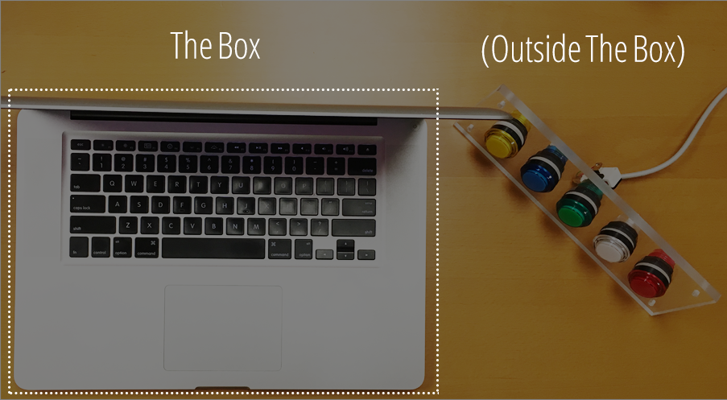
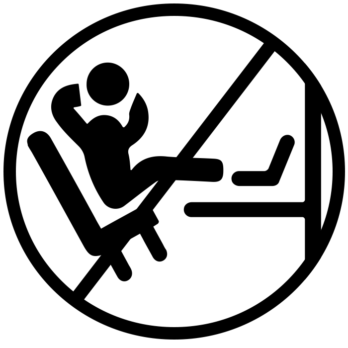
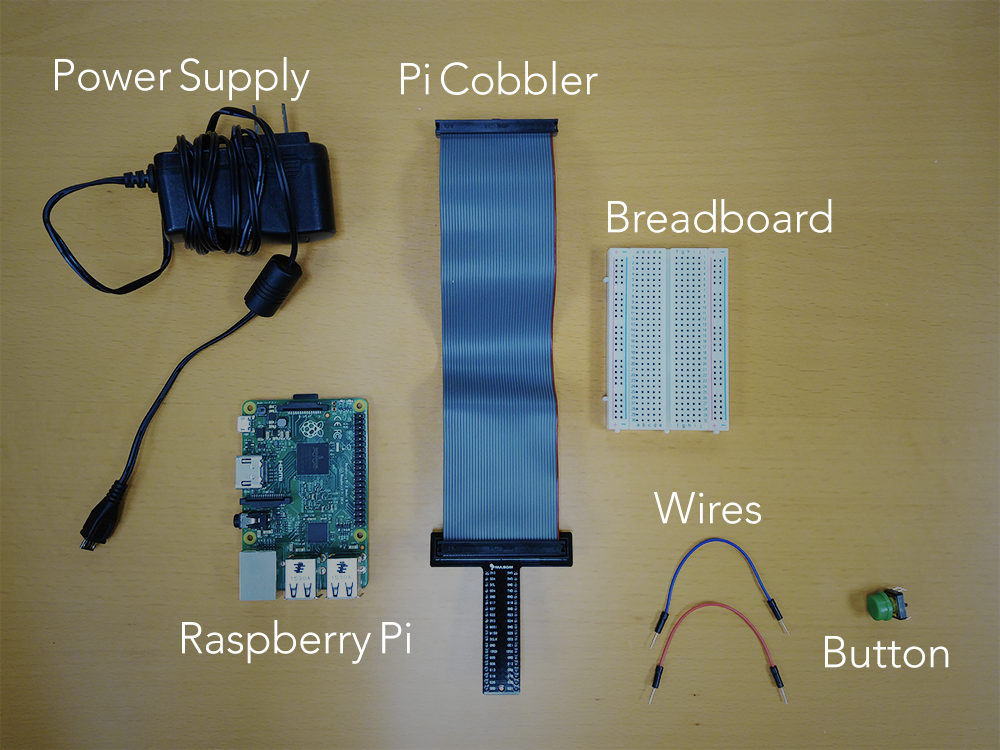

Get Stuff Done. With Real Buttons!
This project was inspired by the growing library of Slack Bots, especially howdy.ai and they work they have done on botkit. Slack Bots can hold conversations, automate common tasks, deliver valuable information and more. Why connect them with a button? Deploying an army of AI minions with the press of a button is, of course, just awesome.
How much work is it?
About 20-30 minutes + ~$45 in parts (and you wanted to buy a Raspberry Pi anyways). Everything about this project is open source. Contributions are welcome!
Think Outside The Box
Odds are that you are wasting tremendous amounts of time pressing multiple buttons when you could be pressing only one.
You, of course, may want to instrument vital business statistics that are not available any other way. For example, by a coffee maker, copy machine – even use it as an office doorbell.
Examples of Real Work from Real Buttons
Here is how we have our buttons set up at the Internet Simplicity office.

Make sure people are productive
Office chit-chat? One button-press, and everone's Slack simulaneously blows up
with a randomized "get back to work" message. Press it multiple times,
with vigor, and a frustrated look on your face for added effect.
Company Coffee Break
As the coffee runner is walking
out the door, they hit the 'coffee button'. A howdy.ai bot with a
custom script is deployed, asking each person if they want coffee, and
if so, what they would like. By the time the coffee-goer gets to the
coffee shop, Slack will have posted everyone's orders.
Run Daily Checkin's
Another button triggers your howdy.ai
bot to run your daily checkins with everyone, saving hours of individual
chats for the same questions.
Socialize
Even let your co-workers know that you care about them... This would deploy
a howdy.ai script that is pretty special – it asks everyone in the office
how their weekend was, then posts everyone's socalizations back to
eachother.
Get Lunch Orders
As Howdy.ai has shown on their site,
you can even collect lunch orders. What could make this even more magical? That's right, a real button. (Lunch ordering with Howdy.ai shown below)
Ready To Get Building?
We built our buttons with the Raspberry Pi, Model B. We recommend choosing the same platform on which hardware you choose, you're total investment should be around ~$48 USD (including the computer!). Time spent, around 30 min, including the time you spend waiting for the installations.
1. Order Some Parts
2. Plug It In and Turn It On
This is pretty self explintory. Need photos plugging in ribbon / cobbler.
3. Install The Basic Software
List out the steps here...note on the ssh "just working" becuase of the exclusive host name (Rex, can you elaborate?)
4. Wire Your First Button
5. Make It Work!
6. Connect Your Button to the Interwebs
Congratulations! The hard part is done. Now that you have a real button that does real things with software, the sky is the limit!
If your team uses Slack like we do, head over to the page describing incoming webhooks.
And, the idea of bots talking to your team gets you excited, why not take it a step further and sign up for a Howdy.ai account.
The Future
Imagine what your working life could like when you have real, connected buttons helping you with everything. The possibilities are endless.

Get In Touch
Buttons.work was created by Internet Simplicity, a San Jose, California based web development firm. If you want to contribute to buttons.work, are looking for a technical web/software development partner, or just want to say hi, drop us a line!